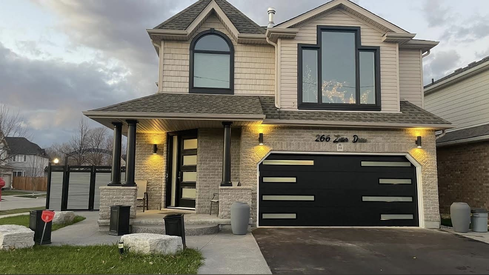
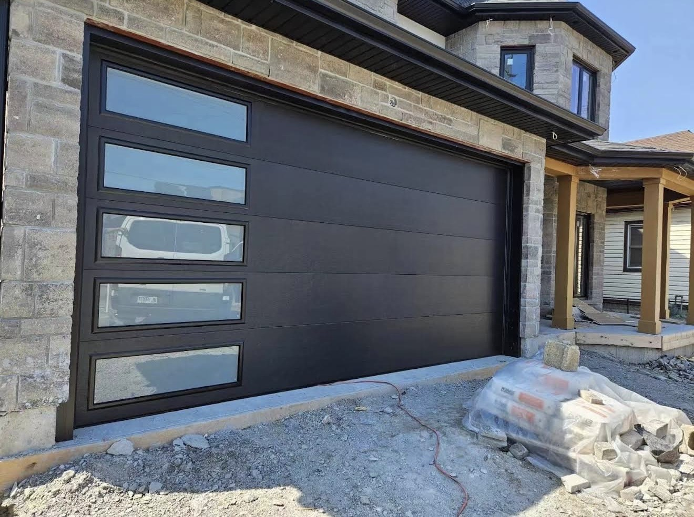
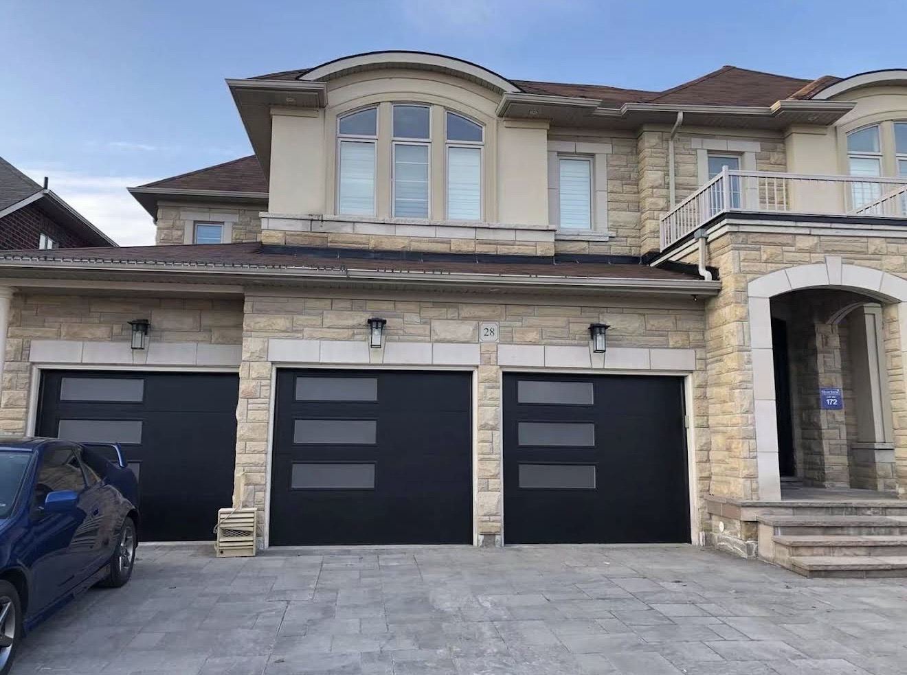
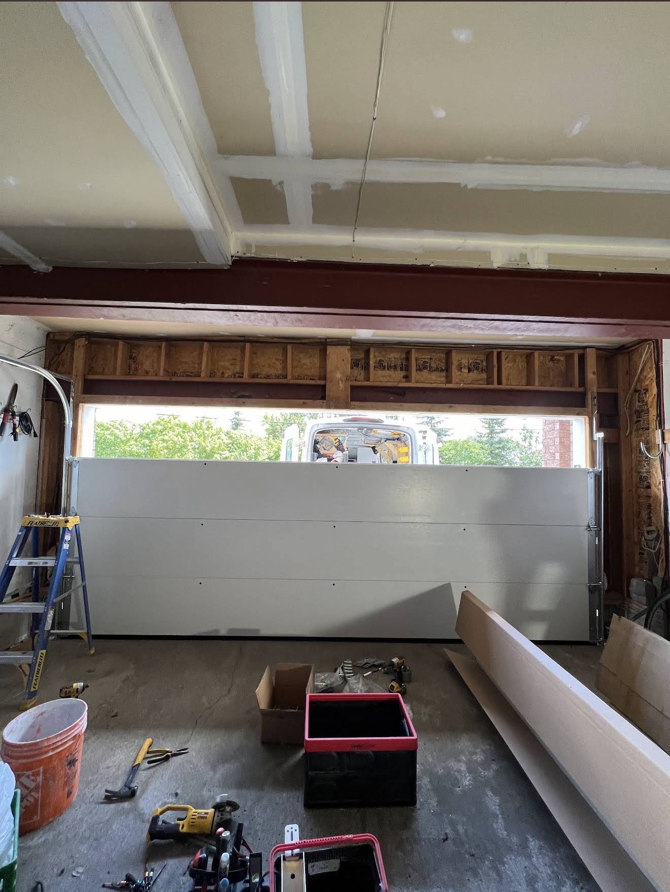
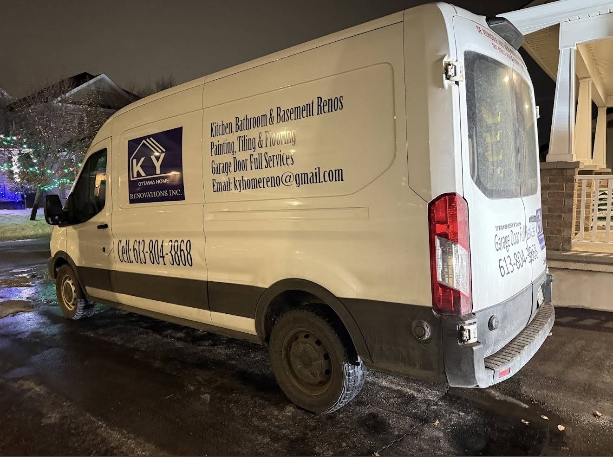
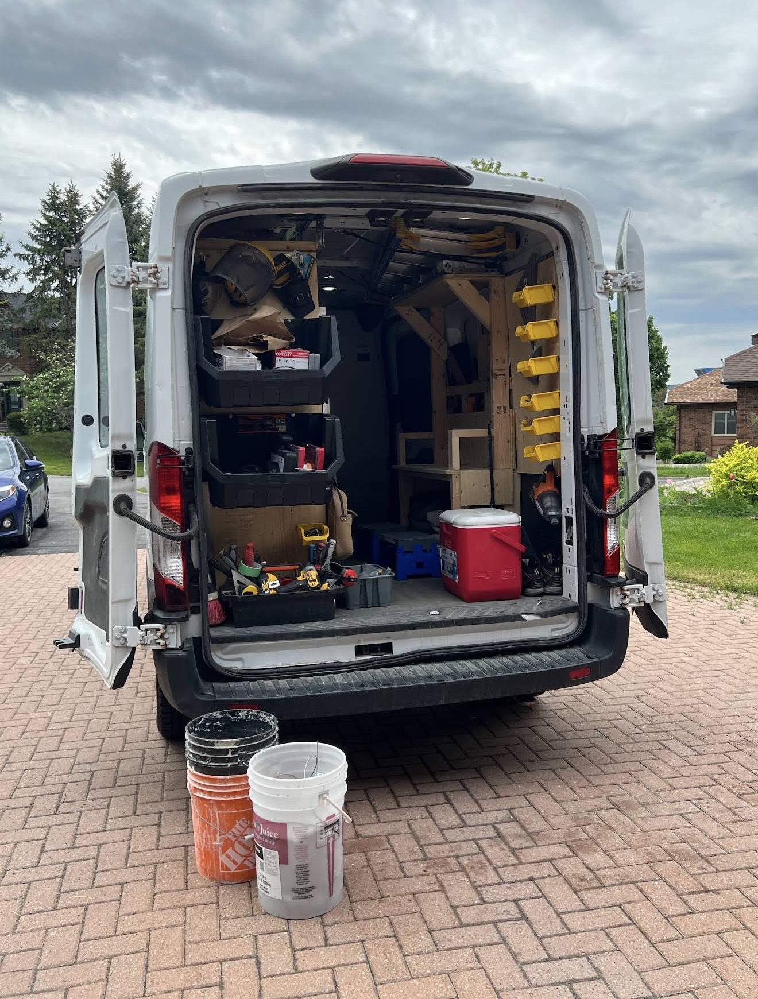

Garage door repair & installation in Ottawa.
From broken springs and cables to opener problems and complete garage door replacement, KY Ottawa Home Renovations Inc. helps keep your garage door working safely and smoothly.
Solutions for the whole garage door system.
Whether the door is stuck, noisy, damaged or ready for replacement, we can help identify the issue and recommend the right next step.
Garage Door Repair
Help for doors that are stuck, uneven, noisy, off-track or not opening and closing correctly.
Garage Door Installation
Installation and replacement of residential garage doors with careful setup and alignment.
Garage Door Openers
Opener installation, replacement and troubleshooting for common operating problems.
Spring Replacement
Service for worn or broken garage door springs affecting lift, balance and operation.
Cables, Rollers & Tracks
Repair or replacement of worn hardware that keeps the door moving correctly.
Panels & Weather Sealing
Panel and weather-seal solutions to improve appearance, protection and everyday performance.
A smoother, safer garage door starts with the right fix.
Garage doors rely on springs, cables, rollers, tracks and openers working together. We focus on identifying the source of the problem rather than treating only the symptom.
Proudly Made in Canada
At KY Ottawa Home Renovations Inc., we bring you high-quality garage doors manufactured in Canada, built for Canadian homes and weather.
We are proudly made in Canada!
All of KY's garage doors are manufactured in-house in Toronto. We put a great deal of care into every product and regularly monitor the quality throughout the manufacturing process.
Highly Insulated & Energy-Efficient
Our KY Ottawa Garage Door goes above and beyond, offering the 2" thickness doors on the market paired with the highest level of polyurethane insulation, providing the greatest energy efficiency.
Garage door installations & service cases.
Real work photos from KY Ottawa Home Renovations Inc. — from installation and opener work to completed garage doors.






“Excellent and professional service. Emergent call, come right away. Changed garage door...”
Garage door service across Ottawa.
Serving Ottawa and nearby communities. Contact us to confirm availability for your neighbourhood.
Ottawa
Garage door repair, installation and opener services.
Kanata
Garage door repair, installation and opener services.
Nepean
Garage door repair, installation and opener services.
Barrhaven
Garage door repair, installation and opener services.
Stittsville
Garage door repair, installation and opener services.
Orléans
Garage door repair, installation and opener services.
Call KY Ottawa today.
Tell us what your garage door is doing and what service you need.